[N-World Contents] [Book Contents] [Prev] [Next] [Index]
N-Paint 3D: Map Mode
Using 3D paints map mode, you can paint on a texture map on the canvas and watch your changes applied immediately to objects in the geometry window.
In this Chapter
You'll learn how to:
Map Mode
There are two modes for N-Paint 3D, map mode and 3D mode. This chapter describes how to paint on an object using map mode.
We called this technique "map mode" because you actually paint on a map and see that image directly applied to a 3D object after each operation. This means that you can work on very complex areas (even areas with obscured faces) in an easy to use environment.
In this chapter, we'll create a simple geometry object, attach a mapper to it, create a map, apply the map through the mapper, then paint on the object.
Preparing the Object
1. In the GeoMenus menu, (CLICK-L) on New Object>Sphere.
- A new sphere appears in the geometry window:
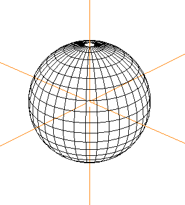
Figure 7.1 Simple sphere
2. (CLICK-L) on Shading in the GeoMenus.
3. (CLICK-L) on Sphere from the object list that appears.
- The sphere is now rendered in the geometry window using GL shade:
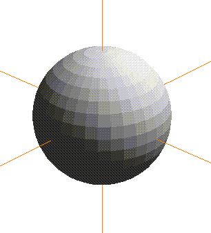
Figure 7.2 Shaded sphere
- Note. You must have shading turned on for any object that you want to paint on with N-Paint 3D.
4. (CLICK-L) on New Object>Mapper on the GeoMenus menu.
- The new mapper parameters menu appears:
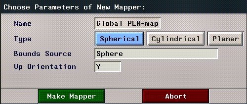
Figure 7.3 New mapper parameters menu
5. (CLICK-L) on Spherical.
6. (CLICK-L) on the Bounds Source field, and select your new sphere from the object list that appears.
7. (CLICK-L) on the Make Mapper button.
8. (SHIFT-L) on the sphere, then (CLICK-L) on Apply Mapper.
- Select the spherical mapper you just created. The mapper is now associated with the sphere.
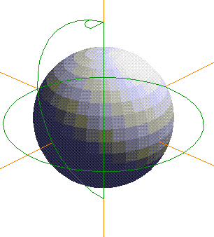
Figure 7.4 Shaded sphere with mapper attached
- Note: In previous sections, we've applied mappers using the browser. You can use the browser or the GeoMenus to assign mappers; the two methods are equivalent.
9. In the commands section of the Paint tools menu, (CLICK-L) on the File>Create New.
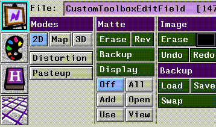
Figure 7.5 N-Paint commands
10. Use the default canvas size (512 x 512), specify a path and filename, and (CLICK-L) on Do It.
11. (CLICK-L) on File>Save to save the new map file to disk.
- Note. If you've already created a basic map, you can specify that map instead of this one as indicated below.
Create a Material
We need to create a material which uses the texture map we created in step 11.
12. Open the Attributes Editor
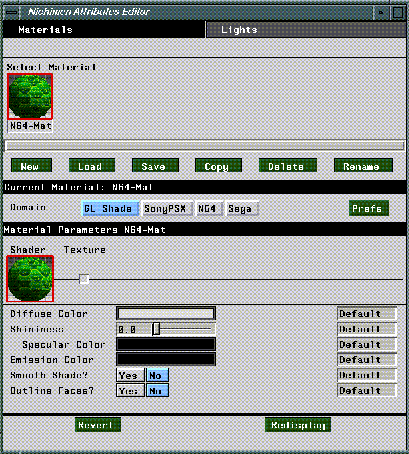
Figure 7.6 The Attributes Editor
13. (CLICK-L) on Materials.
14. (CLICK-L) on New.
- The Create New Material dialog appears:
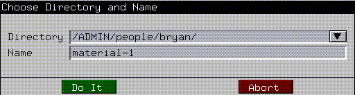
Figure 7.7 Create New Material dialog
- Call this material "3D-Paint-example"
15. (CLICK-L) on Domain>GL Shade.
16. (CLICK-L) on Texture in the Material Parameters section of the menu.
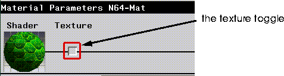
Figure 7.8 The Texture button in the Attributes Editor
17. (CLICK-L) on Map.
- A Choose File dialog box appears. Use this dialog to choose the map you created in step 11
Apply the New Material to the Object
18. In the Browser, (CLICK-R) on the Sphere object.
- The operations menu appears.
19. (CLICK-L) on Assign Material.
- A menu appears listing all materials currently loaded into memory.
20. (CLICK-L) on the material you created in steps 13 through 17.
- The Assign Mappers dialog box appears:
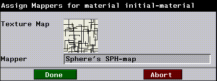
Figure 7.9 The Assign Mappers dialog
- An icon for your texture map appears in this dialog above a field which specifies the mapper for that texture. This field should show the name of the mapper you assigned to the sphere in step 8. If it does not, (CLICK-L) on the field and select the appropriate mapper from the pop-up menu which appears.
- The appearance of the sphere node in the browser changes to reflect the new material attached to it.
21. (CLICK-L) on the Redisplay button to apply the changes to your object and update the view in the N-Geometry window.
- If the map you created in step 11 was a plain black image, your sphere should now look something like this:
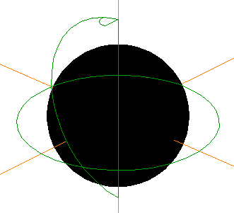
Figure 7.10 Object with map applied
- You're now ready to paint on the object.
Painting on the Object
At this point, you should have a sphere in the N-Geometry window with a mapper attached to it. You should have assigned a map to the object through that mapper. This procedure is similar to what you have probably done in the past, applying mappers to objects with maps, resizing and modifying those maps, and so forth. Now, N-Paint 3D lets you paint on those maps and see the results on your object interactively.
22. (CLICK-L) on the GeoPaint button on the menu bar again, to make sure that the appropriate windows are open.
- This just makes it easy to arrange the windows on your desktop so that what you need is available.
23. (CLICK-L) on bodies in the element sensitivity menu in the geometry window.
24. (CLICK-L) on the sphere to select it.
25. (CLICK-L) on Map in the Modes area of the Paint menu:
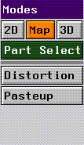
Figure 7.11 Selecting a paint mode
- The geometry of the sphere is "unfolded" on the paint canvas. The vertices and edges in your model become nodes and lines in the N-Paint grid, forming an overlay of your objects geometry on the texture map your painting.
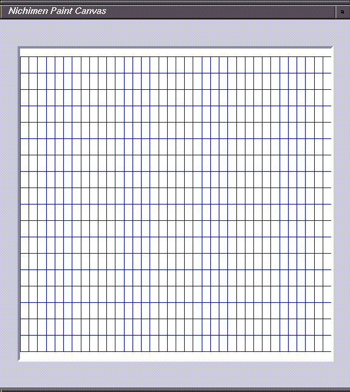
Figure 7.12 The selected object's geometry is "unfolded" onto the paint canvas
26. Choose a paint tool, such as the round brush with a color ink.
27. Paint several strokes on the canvas.
- Note that after each stroke, the object is updated:
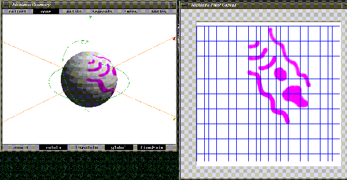
Figure 7.13 Changes made to the map are shown on the object immediately
Delaying Updates on the Object
Hold the ALT key down to paint on a map without updating the object immediately. (This is useful if you're working on a very large object and don't want to redraw the object after each paint operation.)
When you let up on the ALT key, the modified map is reapplied to the object.
Saving Your Work
When you are finished painting on an object, you need to save your object and save your modified maps. You need only save your object if:
To save the object:
28. (CLICK-L) on Save in the GeoMenus.
- Specify a directory and name for your sphere and mapper objects, then (CLICK-L) on Do It.
Saving the Maps
29. In the N-Paint menus, (CLICK-L) on File>Save As .
- Enter the pathname for where the modified map should be saved:
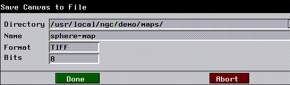
Figure 7.14 Saving the map
- That's it! You've now saved your object with an attached mapper and a custom map created just for that object.
Painting on Parts of an Object
There are several different ways to select parts of an object you want to paint on:
Painting on a Selected Face or Faces
To paint on part of an object:
1. Select the face (or collection of faces) on the object you want to paint on.
- For example, you might want to paint on one section of the sphere we created earlier:
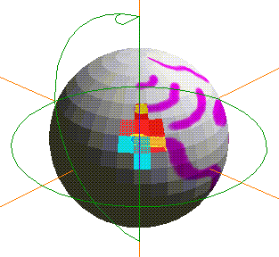
Figure 7.15 Select the faces you want to paint on
2. (CLICK-L) on the Map button in the 3D portion of the menu.
- The highlighted faces are outlined on the paint canvas:
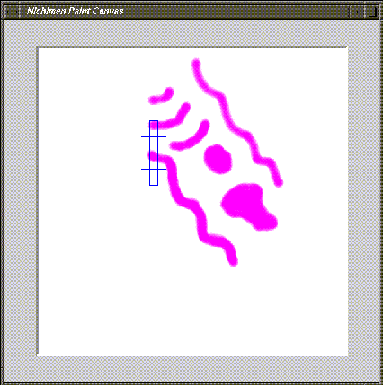
Figure 7.16 Painting on selected faces
- This is handy if you want to see what portion of the map you're painting on corresponds to a selected part of the object:
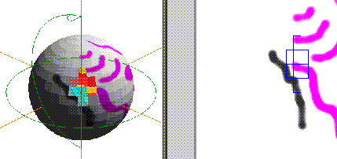
Figure 7.17 Selected faces on the object give you a point of reference
Note that even though you've gathered a collection of faces you want to paint on, painting on the map is not limited to those faces. If you want to paint only on certain faces of the object but protect others, you need to use the matte feature described below.
Using the Matte
When you want to protect part of the canvas (i.e., paint only on the part of the map that corresponds to selected faces), you need to create a matte. N-Paint 3D can build a matte channel for you automatically:
1. Select the face, collection of faces, or body that you want to protect.
2. (CLICK-M) on the Map button.
- A matte channel is created on the paint canvas; to see it, (CLICK-L) on the View button in the Matte modes section of the menu.
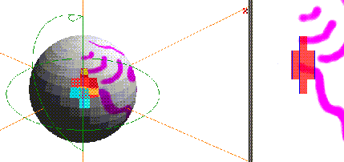
Figure 7.18 Protect selected faces using the matte channel
3. To use the matte, (CLICK-L) on the Use button in the Matte modes section of the menu.
4. If you want to paint on (rather than protect) the selected faces, you can reverse the matte.
- (CLICK-L) on the Rev button in the Matte modes section of the menu. The matte is reversed:
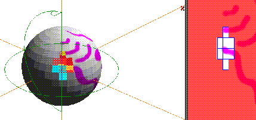
Figure 7.19 Reversing the matte
5. Paint on the unprotected part of the canvas as you normally would:
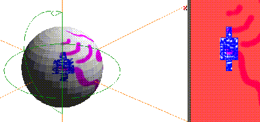
Figure 7.20 Painting on the object using the matte
6. Save your work as described in the section "Saving Your Work," on page 7-11.
Part Select
A "face part" is a face or group of faces on an object that you want to be able to select over and over. To build a face part, you collect the faces in N-Geometry and give those parts a name.
You might collect the eyes on a robot, or the fins on a rocket so that you could easily select that group of faces with one command. Creating face parts is described in more detail in the N-Geometry Reference Guide.
It's also likely that you'll want to use N-Paint 3D to paint on a pre-defined face part; to choose a face part you want to paint on.
Selecting a Face Part on the Object
Once you've entered Map mode:
1. (CLICK-L) on the Part Select button in the 3D Paint portion of the menu.
- A list of face parts on the object is displayed:
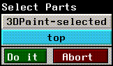
Figure 7.21 Selecting a face part
2. (CLICK-L) on the face part you want to highlight and (CLICK-L) on Do It.
- If "top" was a collection of faces on top of the sphere, it might look something like this:
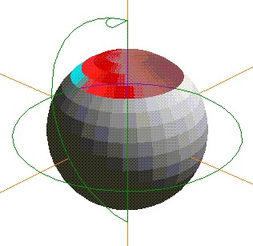
Figure 7.22 Selected part highlighted on an object
3. (CLICK-L) or (CLICK-M) (if you want to create a matte channel) on the Map button.
- The geometry for the selected part of the object is unfolded as an overlay on the canvas.
Displaying Selected Parts of an Object
If you are working on a object with several parts, you may find it useful to temporarily "hide" one or more parts. To toggle the visibility of parts:
1. (CLICK-L) on the Part Select button in the 3D Paint portin of the menu.
- A list of face parts on the object is displayed:

Figure 7.23 Selecting a face part
2. (CLICK-L) on the face part you want to highlight and (CLICK-L) on Do It.
- If "top" was a collection of faces on top of the sphere, it might look something like this:
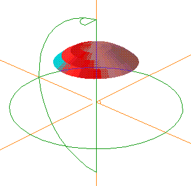
Figure 7.24 Highlighting selected face parts
3. (CLICK-L) or (CLICK-M) (if you want to create a matte channel) on the Map button.
- The geometry for the selected part is unfolded as an overlay on the canvas.
- Note. Even though only a selected part of the object is visible, if you paint beyond the unfolded overlay for that part, non-visible parts of the object will be updated! The Part Select command only controls selection and visibility of face parts; you must specify a matte channel if you want one (as described in "Using the Matte," on page 7-14.
Making the Entire Object Visible
To make the entire object visible, (CLICK-R) on the Part Select button.
The 3DPaint-selected Face Part
When you select a face or group of faces that does not belong to a part, then (CLICK-L) on the Map button in the 3D Paint portion of the menu, a face part is created automatically; this part is called 3DPaint-selected.
Figure 7.25 Selecting a face part
The 3DPaint-selected part is redefined each time you (CLICK-L) or (CLICK-M) on the Map button in the 3D Paint portion of the menu.
- Note. The 3DPaint-selected face part is not redefined if you copy the geometry of a previously defined face part to the paint canvas.
Using the Overlay as a Grid
The displayed overlay can be used as a grid to constrain movement of tools over the paint canvas. The display of the grid can also be toggled on and off.
Using the Grid
1. Press the "g" hot key to constrain movement of any paint tool along the grid overlay.
- This is useful if you want to perform any operation along the edges of the selected object. You may, for example, want to paint along the edges to highlight it, or create a matte along the edges and paint only the interior of the faces.
Toggling Display of the Grid
1. Press the (SHIFT-G) hot key combination to toggle the display of the grid.
- Note. Toggling the display of the grid does not turn it off.
Hot Key Summary
Congratulations!
You've unlocked the power of N-Paint 3D. Now, you can use the geometry of an object as a guide when you create or modify texture maps for that object.
[N-World Contents] [Book Contents] [Prev] [Next] [Index]
 Another fine product from Nichimen documentation!
Another fine product from Nichimen documentation!
Copyright © 1996, Nichimen Graphics Corporation. All rights
reserved.